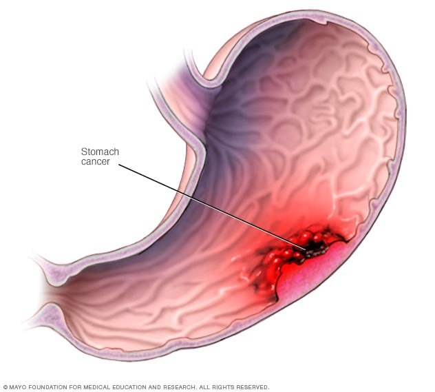

Stomach cancer

SYMPTOMS:
- Difficulty swallowing
-
Feeling bloated after eating
-
Feeling full after eating small amounts of food
-
Heartburn
-
Indigestion
-
Nausea
-
Stomach pain
-
Unintentional weight loss
-
Vomiting
CAUSES:
- Doctors know that stomach cancer begins when a cell in the stomach develops changes in its DNA. A cell's DNA contains the instructions that tell the cell what to do. The changes tell the cell to grow quickly and to continue living when healthy cells would die. The accumulating cells form a tumor that can invade and destroy healthy tissue. With time, cells can break off and spread (metastasize) to other areas of the body.
DIAGNOSIS:
- A tiny camera to see inside your stomach (upper endoscopy). A thin tube containing a tiny camera is passed down your throat and into your stomach. Your doctor can use it to look for signs of cancer.
-
Removing a sample of tissue for testing (biopsy). If any suspicious areas are found during the upper endoscopy, special tools can be used to remove a sample of tissue for testing. The sample is sent to a lab for analysis.
-
Imaging tests. Imaging tests used to look for stomach cancer include CT scans and a special type of X-ray exam called a barium swallow.
TREATMENT
- Treatment options for stomach cancer depend on the cancer's location, stage and aggressiveness. Your doctor also considers your overall health and your preferences when creating a treatment plan